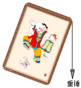
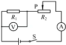

2016年北京市中考物理试题 · 选择题 第11、12、13、14、15题
11．（2分）过春节时贴年画是我国的传统习俗，在竖直墙壁上贴长方形年画时，可利用垂线来检查年画是否贴正，如图所示是年画的长边与重垂线不平行，为了把年画贴正，则下列操作方法中正确的是（ ）

A．换用质量大的重锤
B．上下移动年画的位置
C．调整年画，使年画的长边与重垂线平行
D．调整重垂线，使重垂线与年画的长边平行
12．（2分）水平地面上的购物车在水平推力的作用下，沿推力的方向运动一段距离，则下列判断中正确的是（ ）
A．重力对购物车做了功B．支持力对购物车做了功
C．推力对购物车做了功D．没有力对购物车做功
13．（2分）如图所示的电路中，电源两端电压保持不变。闭合开关S，将滑动变阻器的滑片P向右滑动，则下列说法中正确的是（ ）

A．总电阻变小
B．电流表的示数变小
C．电压表的示数变大
D．滑动变阻器接入电路中的电阻变小
14．（2分）中华人民共和国的国旗为长方形五星红旗，如图是天安门广场升旗仪式的场景，根据图片提供的信息估测该国旗的宽度，下列数据最接近实际情况的是（ ）
A．1.8mB．3.3mC．4.8mD．5.5m
15．（2分）下列说法中正确的是（ ）
A．跳伞运动员匀速下落的过程中，动能变大
B．投出去的实心球在空中运动过程中，运动状态不变
C．跳远运动员起跳后能继续向前运动，是由于运动员具有惯性
D．跳高运动员起跳蹬地时，运动员对地的压力小于地对运动员的支持力